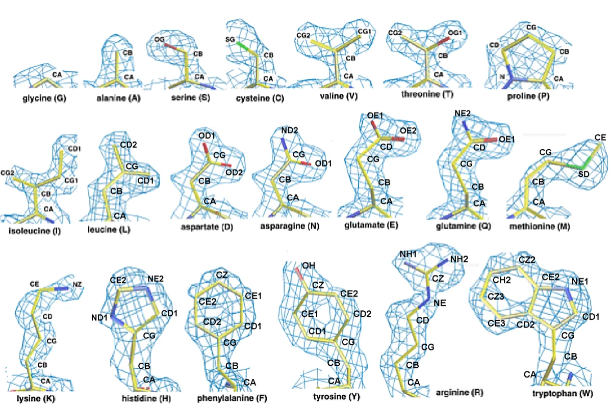
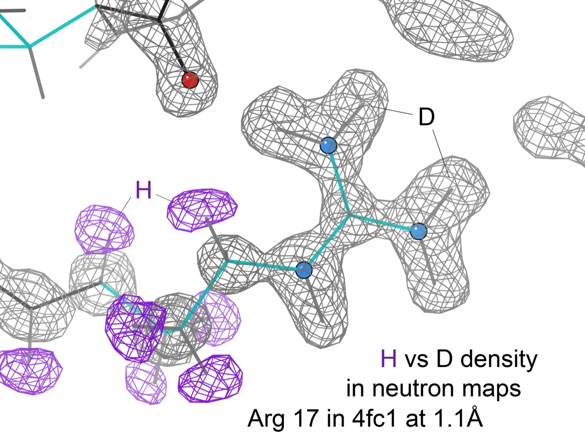

Executive Summary
Programs that calculate how a drug candidate sticks to a protein take their input from atomic coordinates in a structure database. Those coordinates mostly have no hydrogen in them. X-rays locate atoms by bouncing off electrons, and hydrogen has only one electron, so its signal is very weak. At the resolution typical of protein crystals, there is no telling which site the hydrogen sits on. Filling that site in from chemical knowledge is a long-standing practice. A paper published on September 23 in Chemical Science by chemists at New York University built a yardstick to check those filled-in values against. This article looks at what the yardstick found and at what it did not.
The team gathered 128,868 small-molecule crystals whose hydrogen positions had been resolved experimentally, marked the form each crystal actually adopted as stable, marked every other form that software generated for the same molecule as unstable, and ended up with a labeled table of 1,131,426 rows. They then ran the trained model over PDBbind, the standard dataset of proteins with drug candidates bound to them. Among the 5,075 ligands that could take more than one hydrogen arrangement, 279 disagreed with the model. Of those, only the 126 where the swap raised the number of hydrogen bonds and lowered the number of unsatisfied polar atoms were left standing as likely mis-assignments. The widely quoted 2.5% does not cover every disagreement, only the smaller half that structure took sides on.
Sections 1 through 4 report what the paper says. Section 5 is the reading this article draws from it.
Key Numbers
Source: Pan et al., Chemical Science (2026), Results section and Tables 1, 2, and 3.
126 / 279
Reassignments that structure backed
279 ligands disagreed with the model, and in 126 of them the swap added hydrogen bonds and removed unsatisfied polar atoms
2.30 → 1.65
Mean absolute error of docking scores (kcal/mol)
Rescoring those 126 complexes with the new hydrogen placement narrowed the gap to measured binding affinity
129,783
Stable tautomers experiments actually observed
The training table runs to 1,131,426 rows, but only this many forms were seen in a crystal; the rest were spun out by software and labeled unstable
0.72
Precision on the water-based benchmark
Pooling every test set gives 0.88, but the aqueous set measured on its own gives the lowest figure in the paper
The Hydrogen X-Rays Cannot See
The standard way to work out the shape of a protein is X-ray crystallography. You grow the protein into a crystal, fire X-rays at it, watch the beams scatter off electrons into particular directions, and run that pattern backwards to place one atom at a time where the electron density is thick. The method has a blind spot built into it. Hydrogen carries a single electron. Next to any other atom it returns almost no signal, and in crystals of molecules as large as proteins the resolution is usually nowhere near fine enough to pick that faint signal out.
So the Protein Data Bank mostly holds no information about where hydrogen sits. The NYU announcement states the situation plainly: in the Protein Data Bank, "the locations of hydrogen atoms that distinguish one tautomer from another are typically not available." The missing site is not left blank. Someone picks a chemically plausible form and fills it in, and that choice is the tautomer assignment.

Tautomers are forms of a molecule that share a formula while one hydrogen moves to a different site and the bonding pattern shifts with it. On paper the difference looks minor. Yet where the hydrogen sits decides whether the molecule donates a hydrogen bond or accepts one, which is to say it decides which residues inside a protein pocket the molecule can hold hands with. Yingkai Zhang, the chemistry professor who led the study, said that although this may seem like a small change, different tautomers of the same molecule can alter how a molecule interacts with a protein target.
What matters is where that assignment travels next. Docking, free-energy calculations, and virtual screening all take those coordinates and that bonding pattern as input. Derived datasets such as PDBbind, the ones used to train and score binding-affinity models, inherit the same assignment untouched. A form chosen by a person becomes the answer key a machine is graded against.
One misreading is worth heading off. The study does not claim that protein structures are wrong. Zhang drew the line himself in the announcement: "This does not mean that the experimentally determined protein structures themselves are incorrect; rather, our results suggest that the previously assigned chemical representation may warrant revision." The skeleton is what the experiment saw. The layer of chemical interpretation laid over that skeleton is what is up for review.
The Crystals That Do Show Hydrogen
Experimental material that has seen hydrogen does exist, in crystals of small organic molecules. They are far smaller than proteins and pack more neatly, so resolution runs high and X-rays sometimes do catch the hydrogen. The surer route is neutrons. A neutron collides with the nucleus rather than the electron cloud, and a hydrogen nucleus scatters neutrons quite strongly. The atom that a single electron hides from X-rays can be pinned down with neutrons.

That is the material the team chose. The Cambridge Structural Database keeps a curated list of structures whose hydrogen positions are especially reliable, determined primarily through neutron diffraction. The researchers pulled every structure on that list, converted them to molecular formulas, stripped out broken and charged molecules, and deleted anything overlapping the molecules they had set aside for testing. Because a crystal records where the hydrogen actually sat, it also records which tautomer that crystal adopted.
Reading the size of the training table calls for one distinction. The 1.1 million stated in the abstract is not a count of forms that experiments observed. Table 1 breaks it out. There are 128,868 molecules, and 129,783 forms that experiments pointed to as stable. The remainder are other forms that a program produced mechanically from the same molecules, all written down on the unstable side. The full table of those labels runs to 1,131,426 rows. Close to eight rows on the wrong-answer side ride along with every row on the right-answer side. The sources the paper lists are not the CSD list alone either: two experimental databases of aqueous tautomer ratios go in with it.
The labeling rule itself was simple. For each molecule, enumerate every possible tautomer with software, mark the single form observed in the crystal as stable, and mark all the rest as unstable. The paper is upfront about what the rule drags in. Since a molecule can hold more than one stable form while only one gets the stable mark, this labeling strategy inevitably introduces some noise into the dataset.
The model neither builds a three-dimensional structure nor runs quantum mechanics. It is a graph neural network that reads only the flat picture of atoms and bonds and guesses which form is stable. Three graph networks and one fingerprint-based baseline were compared, and AttentiveFP came out as the final pick on a criterion worth noticing. It was not the most precise; it had the highest recall on the validation set. On precision alone AttentiveFP sits at 0.88, below the 0.90 of the two other graph models tested alongside it.
The paper gives its reason. Missing a genuinely stable form usually means missing the form that binds the protein, which throws off all the docking and free-energy work downstream, whereas a few extra unstable candidates slipping through can still be filtered at the later scoring and ranking stage. The team decided which mistake was the expensive one before it picked a model.
Boiled down to a line, this study did not correct an answer key. It brought in a different one. The proposal is to fill the site left empty in protein structures with hydrogen that small-molecule crystals genuinely saw. The new key comes with an environment of its own, though. This is hydrogen seen inside a crystal, not hydrogen seen in water or inside a protein pocket. Section 4 is where that caveat comes back as a number.
From 279 Mismatches to 126 Cases
The trained model was turned on PDBbind v2020, the de facto standard for building and grading binding-affinity models. The search was never the whole dataset. It narrowed once to the 6,202 ligands carrying no charged functional groups, and again to the 5,075 of those that could take more than one tautomer. That 5,075 is the denominator under the widely quoted 2.5%. The trimming went beyond charge. Complexes with a metal ion sitting right next to the ligand came out, and so did ligands with more than 35 heavy atoms. Molecules that ionize tangle hydrogen gain and loss together with the tautomer question, the paper explains, and the two cannot be untied.
In 279 of the 5,075, the form recorded in the database and the form the model picked were different. Here the researchers added a step. That the model disagreed says nothing about which side is right, so they put the question to the structure itself. When the hydrogen is moved to where the model predicts, does the count of hydrogen bonds with the protein go up while the count of polar atoms left without a partner goes down? Both conditions held in 126 cases. The paper calls this group the structure-resolved set and treats it as the strongest support that the original assignment is likely incorrect.
Two further checks ride on those 126. Rescoring the docking after the hydrogen moved and comparing against measured binding affinity dropped the mean absolute error from 2.30 to 1.65 kcal/mol. Quantum chemistry put the predicted form at lower energy than the original in 94% of cases, and 98% of the energy gaps fell inside 2.76 kcal/mol, the threshold corresponding to a 1% tautomer ratio in water. One layer of notation changed, and the scorecard's error shrank.
What became of the other 153? The paper calls them the structure-unresolved set. Prediction and assignment disagreed, but the rise in hydrogen bonding and the drop in unpaired polar atoms did not arrive together. Docking those cases on their own produced no significant score difference between the deposited form and the predicted one. They were left without a verdict.
One point deserves attention here. Quantum chemistry gives those 153 almost the same figures. The predicted form is energetically more favorable than the original in 95% of them, and 97% of the gaps fall inside 2.76 kcal/mol. Set against the 94% and 98% on the side of the 126, the two groups are effectively indistinguishable. What separates them is not energy but a single structural condition, whether hydrogen bonding rose and unpaired polar atoms fell inside the protein pocket. For the 153 the paper lays out three possibilities together, that the receptor may hold a higher-energy form in place, that the scoring function has limits of its own, and that the change may sit in a solvent-exposed region where its effect on binding is faint, and it writes that protein–ligand scoring functions should account not only for binding interactions but also for the energetic penalty of adopting a higher-energy form.
Individual cases show the stakes more clearly. Ligand 529 in the 2BPM structure, a CDK2 inhibitor developed as a cancer candidate, can take two forms; one keeps the key hydrogen bonds to LEU83 and GLU81, and the other breaks them. The model gave 0.99 to the form that keeps them and 0.40 to the form that breaks them. The researchers also noted that the annotation carried by RCSB PDB for this ligand and the structure reported in the original paper do not agree. In the other case, ligand WF8 in 4BTX runs to 12 possible forms in total; the form that crystallographic evidence points to scored 0.96, while the form that fails to make an important contact with ASP180 scored 0.53.
2.5% looks small. But this error does not get binding versus no binding wrong; it gets the manner of binding wrong. Flip the direction of a hydrogen bond and any model trained with that ligand as its answer key learns the wrong binding arrangement as correct. The denominator is worth a second look, too. Charged ligands were out from the start, and so were ligands with only one possible tautomer. This is not an error rate for PDBbind as a whole.
Pooled Scores and Split Scores
The most widely quoted figures for the model are a recall of 0.97 and a precision of 0.88, the numbers in the abstract. They come from pooling five test sets into one, and the paper also reports each test set separately. Measured separately, the numbers differ quite a bit from place to place.
The hardest of the five is water. On the aqueous test set, built from experimentally measured tautomer ratios, precision falls to 0.72. The most forgiving is the set of drug-like molecules whose form several databases record identically, where recall reaches 1.00 and precision 0.91. Count the stable tautomers in each, though, and the two forgiving sets hold 762 and 2,177 while the aqueous one holds 142. Pouring all five into a single pot to get 0.97 and 0.88 reflects the circumstances of the large sets more than the small. The pooled score is not wrong; reading it as performance in water is.
The paper also says why water is harder. Which form is stable inside a crystal and which form dominates once the molecule dissolves are not the same thing. Sorting the errors by type showed most of them falling in hydrogen shifts between heteroatoms, hydrogen shifts between nitrogens inside a ring, and keto–enol pairs. In the pair offered as the representative case, the experimental database records the pyridone form as the stable one in water while the model chose the enol form. A habit of preferring enols learned from the solid state turns into a wrong answer once the grading is done against water. The caveat left open in section 2 comes back here as a number.
Noise in the training labels was measured as well. Pulling out only the molecules holding more than one stable form and asking whether the model catches all of them at once gave 68.6%. Broken down, that is 71.0% on the validation set and 59.5% on the aqueous set. The model often does catch several forms even though it was taught one stable form per molecule, which also means it misses three or four out of every ten.
The score of the simplest model in the comparison sits in the same table. It converts a molecule into a 2,048-bit fingerprint and feeds that to an ordinary multilayer perceptron. Pooled, it reached a recall of 0.92 and a precision of 0.84. Against the 0.97 and 0.88 of the graph network chosen as the final model, the gap is not wide. The paper does not walk past this either, noting separately that the simple fingerprint-based model also achieved strong performance.
The speed figure carries a similar wrinkle. Every news item repeated the sentence about 4.6 million compounds processed in 3.2 hours on a node with one GPU, and the paper's table holds four libraries side by side. One of them took nearly ten times as long with fewer compounds in it.
| Library | Compounds | Enumerated tautomers | Running time |
|---|---|---|---|
| Enamine | 4,671,131 | 24,102,643 | 3.19 h |
| ChEMBL | 2,854,801 | 83,362,598 | 31.08 h |
| ChemDiv | 1,614,271 | 8,238,810 | 0.97 h |
| Asinex | 575,299 | 3,619,606 | 0.67 h |
The cost attaches to the tautomers generated from the compounds, not to the compounds themselves. Enamine yielded a little over five per molecule and ChEMBL yielded twenty-nine. ChEMBL holds roughly six-tenths as many compounds as Enamine and still produced more than three times as many candidates to check. The 3.2 hours is a measured value, taken from the library that gave the least trouble.
Limits that remain get written down too. The workflow as it stands applies mainly to neutral organic molecules and does not handle ionic systems, metal coordination, tautomers stabilized by the receptor holding them in place, or gaps in the tautomer-generating software itself. The discussion closes by naming a unified framework that resolves coupled protonation and tautomerization as the work still to be done. Code and data are published on GitHub, and CSD licensing terms keep the molecular structures out, so only entry identifiers are released.
Why Pebblous Is Watching This Paper
From here the paper gets read again through the lens of data quality.
Those 126 cases did not surface because someone built a better model. They surfaced once the reference data was held up against experimental material from a different source. The distinction matters for a plain reason. When the answer key has a defect in it, performance measured against that key will not show the defect. A model trained with the wrong form as correct earns a higher score the better it reproduces that form. The score goes up and there is no telling what went up.
So the question to ask is not what the model scored but whether a second body of evidence exists to check the first against. This field got lucky. Hydrogen invisible in protein crystals was visible in small-molecule crystals, and it had piled up across more than 120,000 molecules. Most industrial data has no such second experiment. Whoever labeled it labeled it once, and no independent observation exists to check the arithmetic. Raising accuracy in that state is a matter of growing more like the answer key, not of getting closer to the truth.
Getting lucky is not the same as the two bodies of evidence overlapping. By the researchers' own count, 129 of the 625 tautomers confirmed stable in water also appear in the CSD set of neutral organic molecules, which is 20.6%. The paper offers that overlap as grounds for knowledge learned in crystals carrying over into water. Read the other way, the remaining eight-tenths did not carry over so much as get used on the belief that it did. Counting how much of the original ground a substitute source covers is the step that lets anyone say later how far the resulting performance holds.
The modeling record points the same way. A baseline that turns a molecule into a 2,048-bit fingerprint and hands it to an ordinary multilayer perceptron reached a pooled recall of 0.92, and the carefully built graph network reached 0.97. Elaborate architecture bought 0.05 here. What made the study possible was not a better model but crystallographic hydrogen coordinates that nobody had thought to use as training material. Measuring first whether the headroom sits in the architecture or in the data is why we put data diagnosis ahead of swapping models.
Where this paper is honest is in writing down that the new answer key carries conditions too. Hydrogen seen inside a crystal is hydrogen seen in the environment of a crystal. Graded against water, precision drops to 0.72, and the paper also names which error types come up most often. The sentence about the labeling rule introducing noise is in there as well. Bringing in substitute data and recording that data's conditions alongside it is the same reason we ask about labeling rules and provenance first in a data diagnosis. Where the conditions are written down, a wrong label can be fixed; where they are not, even a right label has nothing to stand on.
One more thing. The pooled 0.97 and the split-out 0.72 came from the same model in the same evaluation. Test sets differ in size, so pooling lets the large ones steer the result. If an internal scorecard runs on a single number averaged across several tasks, the sample sizes that average leans on are worth separating out at least once. The 4.6 million compounds in 3.2 hours works the same way. The figure from the least demanding of four libraries is the one circulating as representative.
Data quality in proteins and drugs is ground Pebblous has covered before. We covered the gap between accuracy metrics and real-world hits in binding-site prediction in an earlier piece, and we looked at how protein structures have been solved while data on their motion stays largely missing. This story sits at a different layer from both. The data is not absent, and the model is not wrong. Inside data that exists, a layer filled in by people has been mixed in, and that layer has been serving as the answer key.
Which leaves the question in this shape. What was our model's score measured against? Who built that comparison, under what rules, looking at what? If the answer is that it was always set up that way, then nobody has ever inspected that yardstick.
Thank you for reading this far. The paper this article follows is free to read in full at Chemical Science, and the tool can be run straight from the web. Have a look at whether your own organization can produce a document describing how the reference data grading its models was built, and please do share what you find.
References
Academic
- 1.Pan, X.-L., Han, C., Han, F.-Y., & Zhang, Y.-K. (2026). "Deep learning of tautomer stability from crystallographic proton positions." Chemical Science. DOI: 10.1039/D6SC03714C.
Official Documents & Tools
- 2.New York University. (2026). "Scientists Use AI to Find Stable Forms of Molecules for Drug Discovery." NYU News.
- 3.Pan, X.-L. (2026). "Tautomer-Predictor." GitHub — the repository publishing the paper's data preparation, training, and prediction code (MIT license).
Industry & Press
- 4.Phys.org. (2026). "AI scans 4.6 million compounds in hours to predict hydrogen positions in drug-like molecules."
- 5.Genetic Engineering & Biotechnology News. (2026). "Tautomer-Predictor AI Tool Identifies Stable Molecules for Drug Discovery."